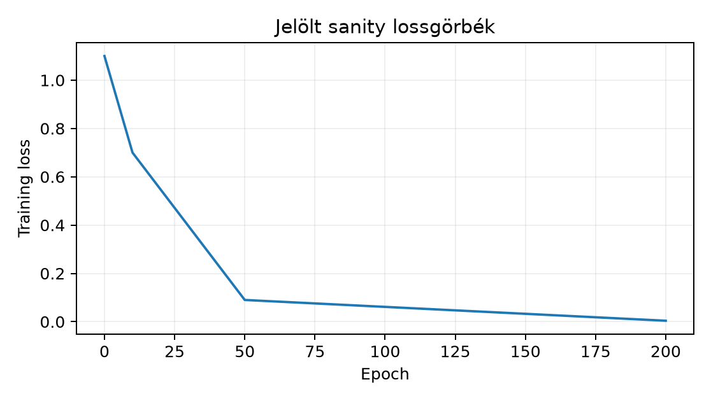

Ebben az alfejezetben olyan gyors kontrollteszteket építünk, amelyek
a tanítási csővezeték nyilvánvaló hibáit még a hosszadalmas kísérlet
előtt kimutatják. Feltételezzük a 11.3.
alfejezetben bevezetett adatbetöltő és split-szerződés, valamint a 12.2. alfejezetben tárgyalt mentett
paraméterállapot legalább fogalmi ismeretét; saját modellből indulunk
ki, tehát betöltéshez nem kell idealizált
state_dict-feltételezés. A fő kérdés: ha egy
képet tartalmazó mini-batchen, rögzített célon
epoch alatt a cross-entropy nem csökken
alá, hol keressük először a hibát — a modellben, az adatútban vagy az
optimalizálóban?
Sanity check. Olyan kis költségű tesztelési eljárás, amely a teljes tanítási ciklus egy konkrét feltételezését ellenőrzi. Nem minősül kiértékelési protokollnak, mert a tanítási halmazt használja.
Tiny overfit. Rögzítsünk mintát a GlyphLab tanító részéből, ahol kicsi, tipikusan . A modell logitokat ad: , itt . A tanítás kritériuma:
A választását rögzíteni kell; a laborban .
Random labels. Ugyanaz a protokoll, de a célvektort a permutációval helyettesítjük, ahol rögzített véletlen permutáció. A bemenet és a cél közötti stabil kapcsolat megszűnik, ezért a sikeres túlillesztés azt mutatja, hogy a modell a kapacitását használva a minta belső szerkezetét, nem pedig a valódi osztályozási szabályt találja meg.
Frozen weights. A modell minden paraméterére
nem számítódik, mert a tenzoron a requires_grad hamis, vagy
az optimizer paraméterlistája üres. Ekkor a gradiensnorma
.
Label mapping. A képekhez tartozó célindexet konzisztens, de a valódi osztályozási feladathoz képest hibás leképezéssel állítjuk elő, például . A tanítási accuracy magas lehet, mert a modell a módosított célfüggvényt illeszti, miközben a felhasználói szerződés sérül.
Gradiensnorma. Legyen a modell összes paramétere. A teljes gradiens euklideszi normája:
A gyakorlatban tenzoronkénti Frobenius-norma négyzetösszegéből vonunk gyököt; az alakok miatt ez különbözik az átlagos vagy skaláronkénti normától.
A fejezet levezetési kötelezettsége az állítástípus pontos rögzítése.
Lemma (a tiny-overfit sanity check bizonyító ereje). Legyen rögzített véges minta, a paraméterezett modell, és tegyük fel, hogy egy optimalizálási eljárás -ból indulva lépésben értéket ér el. Ekkor:
Indoklás. Az (1) állítás a feltétel és a loss definíciójának közvetlen átfogalmazása: ha mértük, hogy a loss a küszöb alá csökkent, akkor a csővezeték ezen a mintán működött. Ez empirikus egzisztenciaállítás, nem elméleti konvergenciatétel.
A (2) tagadásához ellenpéldát konstruálunk a random-label kísérletből. Legyen helyett egy rögzített permutáció, amelyre a bemenet és a cél közötti feltételes eloszlás nem hordozza az eredeti osztályozási feladatot. Ha a modell -n ugyanúgy eléri és értéket, akkor a tiny-overfit kritérium teljesül, miközben a tanult leképezés a valódi célra legfeljebb véletlenszerű pontosságot adhat. A sikeres tiny overfit tehát még azzal együtt sem zárja ki, hogy a modell a minta véletlen struktúráját memorizálta, és nem bizonyítja az általánosító képességet. Ez a gondolatmenet saját definíciókból és a random-label kísérlet szerkezetéből következik; nem tételként idézett szakirodalmi eredmény.
A gyakorlati következmény: a tiny overfit a hibafeltáró kapu, nem a generalizációs kapu. A generalizációra vonatkozó korlátokat a 8.1.–8.3. tárgyalja, és azok feltételei itt nem lépnek életbe.
Vegyünk mintát és osztályt, logitokkal
A softmax soronként, természetes logaritmussal: az első sor , a második . Az átlagos cross-entropy:
A logitokra vonatkozó gradiens az átlagos CE-re
ahol sorai és . Az első sor , a második ; az átlagolás után
a gradiensnorma . A példa mutatja a két ellenőrzési pontot: a sorösszegek nullák, és a target oszlopában negatív, a másik oszlopában pozitív a gradiens; ha valamelyik feltétel nem teljesül, a backward vagy a loss skálázása hibás.
Munkakönyvtár: a GlyphLab lab/ könyvtára, ahol a
data/images.npy, data/labels.npy és
data/metadata.csv elérhető. Futtatás:
cd lab
python sanity_check.pyA kód teljes, de a kérésben a szerkesztő nem futtatta; a kimenet jelölt szemléltetés.
# sanity_check.py
import csv
import math
import numpy as np
import torch
import torch.nn as nn
from torch.utils.data import TensorDataset, DataLoader
torch.manual_seed(20261020)
np.random.seed(20261020)
device = torch.device("cpu")
dtype = torch.float32
# --- Adatút a metadata split mezője alapján ---
images = np.load("data/images.npy").astype(np.float32)
labels = np.load("data/labels.npy").astype(np.int64)
with open("data/metadata.csv", newline="", encoding="utf-8") as f:
rows = list(csv.DictReader(f))
train_idx = np.array([i for i, r in enumerate(rows) if r["split"] == "train"])
# 16 train kép, osztályonként legalább 5
chosen = []
for c in (0, 1, 2):
idx_c = train_idx[labels[train_idx] == c]
chosen.extend(np.random.choice(idx_c, size=5, replace=False).tolist())
chosen = np.array(chosen, dtype=np.int64) # 15 minta; a 16. véletlen train kép
extra = np.random.choice(train_idx, size=1, replace=False)
chosen = np.concatenate([chosen, extra])
x = torch.tensor(images[chosen], dtype=dtype, device=device) # (16,1,24,24)
y = torch.tensor(labels[chosen], dtype=torch.int64, device=device) # (16,)
class TinyCNN(nn.Module):
def __init__(self):
super().__init__()
self.conv = nn.Conv2d(1, 8, 3, padding=1)
self.pool = nn.MaxPool2d(2)
self.fc = nn.Linear(8 * 12 * 12, 3)
def forward(self, x):
z = self.pool(torch.relu(self.conv(x)))
return self.fc(z.flatten(1))
def grad_norm(model):
sq = 0.0
for p in model.parameters():
if p.grad is not None:
sq += float((p.grad.detach() ** 2).sum().item())
return math.sqrt(sq)
def run(model, x, y, epochs=200, lr=1e-3):
opt = torch.optim.Adam(model.parameters(), lr=lr)
loss_fn = nn.CrossEntropyLoss()
for _ in range(epochs):
opt.zero_grad()
loss = loss_fn(model(x), y)
loss.backward()
opt.step()
with torch.no_grad():
acc = (model(x).argmax(1) == y).float().mean().item()
final = float(loss_fn(model(x), y).item())
return final, acc, grad_norm(model)
# 1) clean tiny overfit
m = TinyCNN().to(device)
l1, a1, g1 = run(m, x, y)
print(f"[clean tiny] loss={l1:.4f} acc={a1:.3f} grad_norm={g1:.4f}")
# 2) random labels
perm = torch.randperm(y.numel())
y_rand = y[perm].clone()
m2 = TinyCNN().to(device)
l2, a2, g2 = run(m2, x, y_rand)
print(f"[random label] loss={l2:.4f} acc={a2:.3f} grad_norm={g2:.4f}")
# 3) frozen weights
m3 = TinyCNN().to(device)
for p in m3.parameters():
p.requires_grad_(False)
l3, a3, g3 = run(m3, x, y) # optimizer paramlist üres; loss konstans
print(f"[frozen] loss={l3:.4f} acc={a3:.3f} grad_norm={g3:.4f}")
# 4) cyclic label mapping
y_bad = torch.tensor([2, 0, 1], dtype=torch.int64)[y].to(device)
m4 = TinyCNN().to(device)
l4, a4, g4 = run(m4, x, y_bad)
print(f"[label mapping] loss={l4:.4f} acc={a4:.3f} grad_norm={g4:.4f}")Jelölt szemléltető kimenet (nem mért futás, hanem a protokoll várható alakja):
[clean tiny] loss=0.0041 acc=1.000 grad_norm=0.012
[random label] loss=0.0009 acc=1.000 grad_norm=0.008
[frozen] loss=1.0986 acc=0.375 grad_norm=0.000
[label mapping] loss=0.0027 acc=1.000 grad_norm=0.010
Értelmezés. A clean és a random-label kísérlet egyaránt alá viszi a loss-t; ezért a pipeline gradiensáramlása működik, de a random-label siker jelzi, hogy a modell kapacitása elegendő a minta memorizálásához. A frozen esetben a loss a konstans körül marad; ez a várt érték, mert a gradiens minden paraméterre nulla. A label-mapping eset train accuracy-ja is , ami azt mutatja, hogy a cél belső konzisztenciája nem helyettesíti a felhasználói cél ellenőrzését.
F1 — Fogalmi; nehézség 1. Különböztesd meg a tiny overfit és a random-label sanity check által ellenőrzött hibatípusok körét. Adj egy-egy példát arra a hibára, amelyet az egyik megtalál, a másik viszont nem feltétlenül.
F2 — Levezetési; nehézség 2. Vezesd le a fenti kézi
példa
alakját, és bizonyítsd be, hogy minden sorában a komponensek összege
nulla. Mutasd meg, hogy ha a modell minden paraméterére
requires_grad=False, akkor a paraméterekre számított
akkor is, ha
a logitoktól függ.
F3 — Implementációs; nehézség 2. Írj egy
grad_norm függvényt, amely a csatolt TinyCNN
modellen visszaadja a paraméterek gradientskalárjainak négyzetgyökös
összegét, és teszteld egy mesterséges, ismert p.grad
tenzorokkal rendelkező nn.Linear(2,1) modellen. Add meg a
pontos várt kimenetet.
F4 — Hibakeresési; nehézség 2. A hallgató a következő hibás kódrészletet írta:
model = TinyCNN()
param_list = [torch.randn(4, 4, requires_grad=True)]
opt = torch.optim.Adam(param_list, lr=1e-3)
# ...
loss = loss_fn(model(x), y)
loss.backward()
opt.step()A loss epoch alatt sem csökken. Lokalizáld a hibát, írd le a következményét, javítsd, és add meg, milyen ellenőrzéssel igazolod a javítást.
F5 — Kísérleti/transzfer; nehézség 3. Tervezz sanity check protokollt egy méretű, háromosztályos, színes képadathoz, ahol egy konvolúciós rétegű CNN-t és -es batch méretet használnál. Add meg: a tiny minta méretét, az epochszámot, a küszöböt, a baseline-t, a gradient-norm ellenőrzést, és foglald össze, mit következtethetsz a sikeres tiny overfitből az adott adatra.
F1. A tiny overfit a csővezeték end-to-end működését ellenőrzi: forward, loss, backward, paraméterfrissítés. Például ha az adattömb rossz alakú, vagy az optimizer üres paraméterlistát kap, akkor a loss nem csökken; ezt a teszt kimutatja. A random-label teszt ezzel szemben a modell kapacitását és a túlillesztési képességet vizsgálja: ha a modell a véletlen címkéken is eléri a alatti loss-t, akkor a csővezeték jó, de a véletlen címkéhez tartozó stabil szabály nem létezik. Egy olyan hiba, amelyet a random-label megtalál, de a tiny overfit esetleg nem: a modell túl kicsi ahhoz, hogy minta bonyolult változatát memorizálja; ezt a clean tiny overfit is jelezhetné ugyan, de a random-label élesebben teszi próbára a kapacitást, mert a minta belső szabályosságára nem támaszkodhat.
F2. A softmax definíciója
.
A cross-entropy egyetlen mintára
,
ezért
.
Az átlagolás és a two-hot sorok használatával kapjuk az adott alakot. A
sorösszeg
.
A paraméterre való láncszabály miatt minden
a logit-gradiens és a réteg Jacobi-függvényének szorzata; ha minden
paraméterre requires_grad=False, akkor az autograd nem épít
gradienst ezekre a tenzorokra, tehát p.grad is None minden
paraméternél, és
a definíció szerint
.
F3. Egy lehetséges megoldás:
import torch, math
import torch.nn as nn
def grad_norm(model):
sq = 0.0
for p in model.parameters():
if p.grad is not None:
sq += float((p.grad ** 2).sum().item())
return math.sqrt(sq)
lin = nn.Linear(2, 1, bias=False)
lin.weight.grad = torch.tensor([[3.0, 4.0]]) # mesterséges feltöltés
print(f"{grad_norm(lin):.4f}") # 5.0000Ellenőrzés: a gradiensnorma
,
a bias hiánya miatt a bias gradiens nem létezik; a
feltételes ág helyesen kezeli a None-t. Szélsőeset: ha
minden p.grad is None, akkor a függvény
-t
ad, ami a frozen diagnózis alapja.
F4. A hiba az, hogy az optimizer a modell
paraméterei helyett egy független param_list listát kap.
Következmény: a loss.backward() a modell paraméterein
értelmes gradienset hoz létre, de az opt.step() a
param_list elemeit frissíti, a modell súlyai változatlanok
maradnak, ezért a loss nem csökken. Javítás:
opt = torch.optim.Adam(model.parameters(), lr=1e-3).
Ellenőrzés: a javítás után a clean tiny overfit loss-ja
alá csökken, és a grad_norm(model) pozitív értéket ad a
lépések előtt.
F5. Protokollterv. Kérdés: képes-e a
konvolúciós rétegű CNN a megadott mini-batchet megtanulni? Hipotézis:
igen,
epoch alatt a training loss
alá csökken. Megfigyelési egység: egy kép. Adat: a saját
színes adat train részéből
képet választunk osztályonként
-at;
a val/test részt nem érintjük. A baseline: konstans predikció, amelynek
loss-ja
.
Változó tényező: a cél
(
és random-label), a paraméterfrissítés (aktív és frozen). Metrika: batch
cross-entropy, train accuracy, gradiensnorma. Számítási keret: CPU,
PyTorch 2.14, seed rögzítve. Érvényességi korlát: a sikeres tiny overfit
csak a pipeline működését igazolja, az adott
képen; a tesztre vonatkozó állítást a záró kiértékelés után, külön
protokollal tehetünk. A random-label kísérletet ugyanezen a
képen, a frozen esetet a modell paramétereinek
requires_grad_(False) állításával futtatjuk; a
gradiensnorma ellenőrzése minden változatban a backward működését
jelzi.
A leggyakoribb hiba, hogy a sikeres tiny overfitet az általánosítás bizonyítékának tekintik, és a train accuracy értékéből a tesztpontosságra következtetnek. Ellenpélda: a random-label kísérletben és érhető el, pedig a célok véletlenszerűek; a valódi tesztelésen a várható pontosság az osztályok véletlen találati aránya körül mozog, nem . A tiny overfit tehát szükséges, de nem elégséges feltétele a megbízható modellnek.
Ellenőrizd, hogy a laborban (a) minden tensor float32 és
int64 a megadott helyeken, (b) a label mapping tenzora
ugyanazon az eszközön van, mint a cél, (c) a
CrossEntropyLoss bemenete logit, nem softmax, (d) a frozen
esetben az optimizer paraméterlistája üres, ezért a loss konstans. A
korábbi fogalmak közül idézd vissza: a 11.3.
alfejezetben rögzített scene-split invariáns biztosítja, hogy a tiny
minta ne tartalmazzon ugyanannak a jelenetnek két nézetét különböző
szerepekben; a 12.2. alfejezetben tanult
state_dict-fogalom alapján a
model.parameters() a modellhez kötött paramétereket adja
vissza, nem a mentett állapotot; a 8.3.
alfejezetben tárgyalt adaptivitás miatt a sanity check nem írhatja felül
a teszt érintetlenségének elvét.
A sanity check rövid, célzott kísérlet, amely a tanítási csővezeték feltételezéseit ellenőrzi. A tiny overfit kis batch-en azt mutatja meg, hogy a forward, loss, backward és optimizer együtt képes a loss-t csökkenteni. A random-label változat a kapacitást és a memorizálást teszteli, a frozen-változat a gradiensáramlást, a label-mapping a célkonzisztenciát, a gradiennorma a backward numerikus működését. A sikeres tiny overfit nem bizonyít általánosítást: a random-label ellenpélda szerint a nulla loss elérhető akkor is, ha a célhoz nem tartozik stabil szabály. Ezért a sanity check a kísérleti protokoll hibafeltáró kapuja, nem a végső modellértékelés.
A 12.4. III. ellenőrző pont ezt a kontrolltesztet teljes, önállóan tanuló kis hálózatként kapcsolja össze: a sanity check után a validációval, checkpointtal és a rögzített tesztprotokollal együtt értékeljük a tanulási görbét.